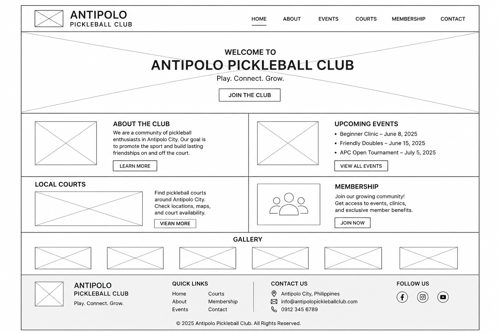

Site Purpose
The Antipolo Pickleball Club website serves as an online resource for players in Antipolo City, providing information about the club, upcoming events, local courts, membership, and the sport of pickleball.
Scenarios
Where can I play a game of pickleball?
How can I start learning the sport?
Color Schema
| #506849 (Hunter Green): | header background, | heading background |
|---|---|---|
| #7FD0E7 (Sky Blue): | h2 background | |
| #FFD791 (cream): | header bottom border, | footer background |
| White: | Header color |
Typography
| Poppins: | Header and headings |
|---|---|
| Open sans: | Body and footer |
Wireframe
